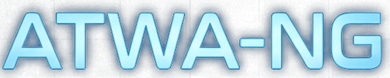
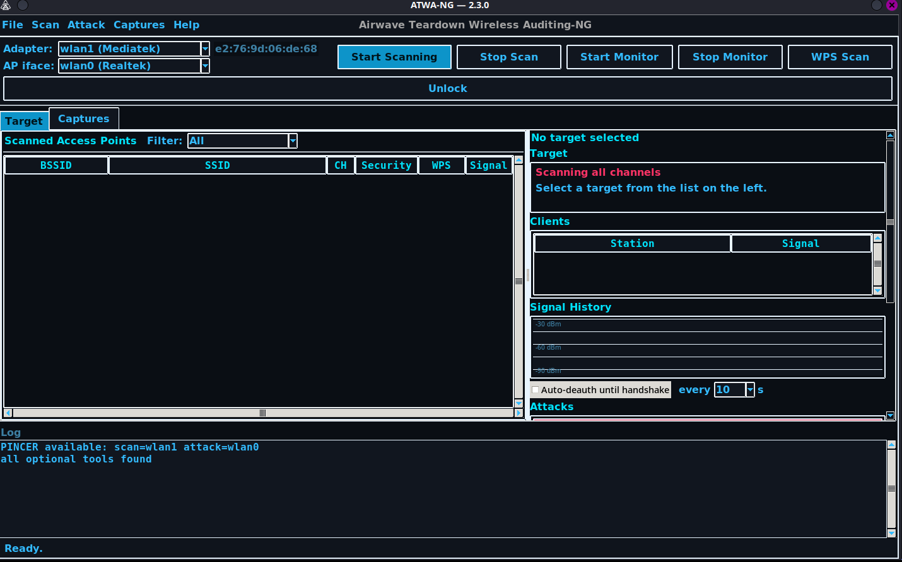

Airwave Teardown Wireless Auditing
A real 2-in-1 WiFi pentesting and cracking engine — attack and crack from one interface, one native codebase. This is the last WiFi pentesting tool you'll ever need.
# clone and go
git clone https://github.com/KiMiGuel/ATWA-NG.git
cd ATWA-NG && pip install -e .
atwa gui
// note from the guy who built it
N2-NG did its job for about a year, but it only ever had one radio, and that radio had to do everything — scan, deauth, capture, all queued up and fighting each other for airtime. I lost more handshakes to my own tool timing itself out than I ever did to a locked-down AP.
ATWA-NG is the rebuild. Same mission, but this time the second radio actually pulls its own weight instead of sitting idle. Full changelog's in the repo — the short version is everything hits harder now.
— KiMiGuEL
What it does
Scan or attack. Listen or strike. One radio doing one job badly at a time — the scan stutters the second you fire a deauth, the handshake drops a frame because your only adapter just got yanked onto another channel to send a packet. That's not a workflow, that's a compromise dressed up as software. ATWA-NG is built from scratch to end that compromise.
Capture and crack live in the same interface — no juggling a scanner, an attack script, and a separate cracker.
PMKID, handshake capture, WPS, WEP and Evil Twin are real from-scratch implementations on scapy — not subprocess.run() gambles around other CLI tools.
An AUTHORIZED-vs-challenge-only verification gate on every handshake — you know it's crackable the second it lands on disk.
The feature nothing else has
PINCER runs two Alfa WiFi adapters at once — any two Alfa cards capable of monitor mode and packet injection, auto-detected by chipset. Plug both in, lock a target, hit PINCER. From that instant, neither radio ever pauses, hops, or time-shares to do the other one's job.
Everything else in the box
Every attack below is a real, native implementation. No shell-outs, no guessing whether a wrapped binary is still alive.
| Attack | What it actually does |
|---|---|
| Smart Attack | Auto-routes: PMKID first, falls back to deauth + handshake if the target is clientless-immune |
| OMNI Attack | Full adaptive chain — profile → PMKID → handshake → online guess → crack, one click |
| PMKID | Clientless — no connected client needed. Native scapy, PMF-aware |
| Handshake Capture | Native EAPOL sniff with an AUTHORIZED-vs-challenge-only verification gate |
| WPS | Null-PIN, Pixie-Dust, and Bruteforce — Bruteforce tries a free null-PIN first and bails on a locked AP instead of burning 10,000 attempts |
| WEP | Fake-auth + ARP replay + native PTW key recovery, plus Caffe Latte for client-only attacks |
| Evil Twin | Real rogue AP + captive portal, auto-deauths real clients toward it |
| Online Password Guess | Live, real per-password 4-way handshake attempts straight against the AP |
| Cracking | Miguel and aircrack-ng wired in — one-click crack, or point it at a folder of captures to merge, convert, and crack the lot |
| Hidden SSID de-cloaking | Automatic, the moment a probe response reveals it |
Using it
Launch with atwa gui (needs root). Here's the flow, start to finish.

Puts your WiFi card into monitor mode. A second adapter in AP iface unlocks PINCER or Evil Twin's rogue AP.
Channel-hops and fills the target list live — BSSID, SSID, channel, security, signal.
Locks the channel, starts the signal graph, and starts a real capture against just that AP.
Deauth, PMKID, Handshake, Smart/OMNI, WEP, WPS, Evil Twin — from the Attack menu or button stack.
Inspect, Convert to 22000, Fix, Merge, Crack Selected, or the folder-wide Crack Handshakes dialog.
Two backends — Miguel the Ripper (default) or aircrack-ng. Point Crack Handshakes at a folder and it merges, converts, and cracks the lot.
# .cap/.pcap auto-converts to 22000 first atwa crack capture.cap rockyou.txt # aircrack-ng backend instead atwa crack-cap capture.cap rockyou.txt --bssid AA:BB:CC:DD:EE:FF # sanity-check a capture before spending wordlist time on it atwa verify-handshake capture.cap
Full CLI reference (16 subcommands) and a dependency checklist → USAGE.md
How it works
No black boxes. Here's the actual mechanics behind ATWA-NG.
PINCER dedicates one radio to capture and one to attack — permanently, for the whole session. No single adapter is ever asked to scan and strike at once.
PMKID extraction, EAPOL handshake sniffing, and PTW WEP key recovery are all written natively — not thin wrappers piping output from other tools.
Profile the target first, then route automatically: PMKID attempt → handshake capture → online guessing → cracking — no manual mode-switching.
Handshakes are checked against an AUTHORIZED-vs-challenge-only gate before they're reported — a capture on disk is one you can actually crack.
WPS Bruteforce checks for a free null-PIN and bails immediately on a locked AP; Pixie-Dust exploits weak nonce generation offline instead of grinding 10,000 online attempts.
PINCER identifies which of your two adapters should listen and which should strike by chipset — plug in any compatible pair of Alfa cards and it configures itself.
Get started
git clone https://github.com/KiMiGuel/ATWA-NG.git
cd ATWA-NG && pip install -e .
atwa gui
The full experience — needs root.
atwa scan wlan0
atwa smart wlan0 <bssid>
atwa omni wlan0 <bssid> --wordlist rockyou.txt
Requirements: Linux, Python 3.10+, a WiFi adapter capable of monitor mode + injection — a pair of compatible Alfa adapters to unlock PINCER.